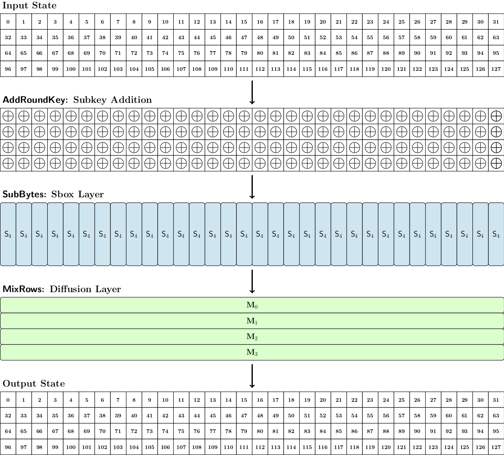
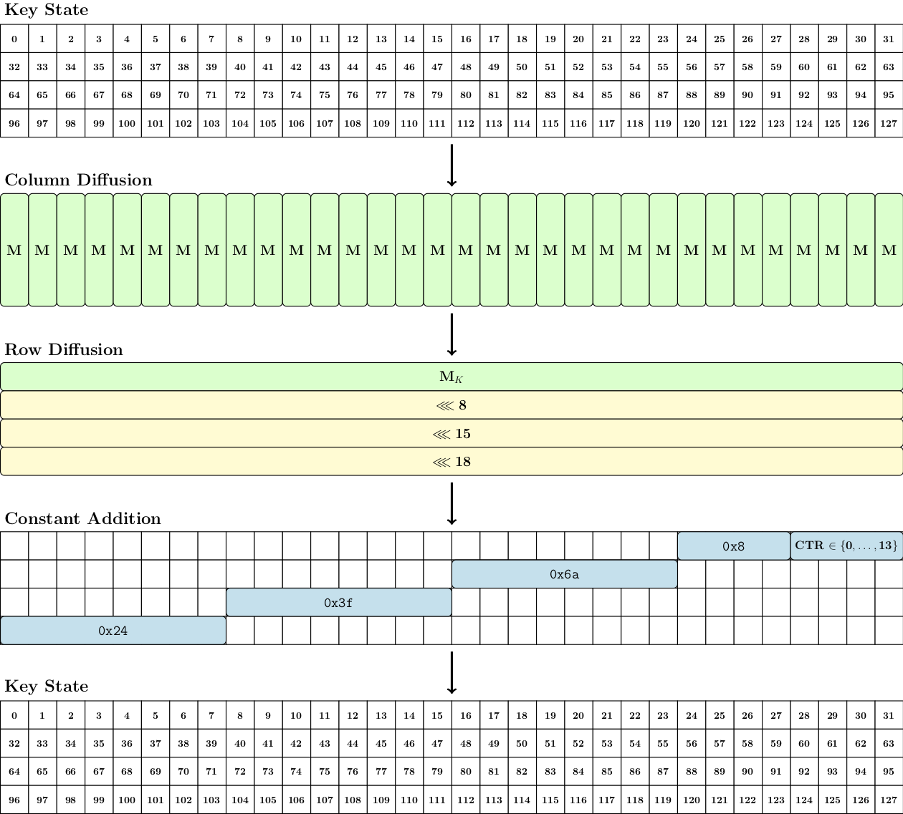

Block cipher design
The Pyjamask block cipher family is composed of two algorithms: one with a 96-bit block size called Pyjamask-96, and a second with a 128-bit block size called Pyjamask-128. The parameters of the two instances are summarized in the following table:
| Instance | State size (n) | Nb. rows (r) | Nb. columns | Key size | Nb. rounds |
| Pyjamask-96 | 96 | 3 | 32 | 128 | 14 |
| Pyjamask-128 | 128 | 4 | 32 | 128 | 14 |
The cipher relies on a Substitution-Permutation Network (SPN) structure that transforms the initial plaintext to a ciphertext through several applications of a key-dependent round function. Each round key is derived from the secret key through an iterated key schedule algorithm.
State
The plaintext is initially loaded into the internal state of the cipher which is viewed as a matrix of bits composed of 32 columns and either 3 rows (for Pyjamask-96) or 4 rows (for Pyjamask-128).
Round function
The number of rounds applied is 14 for both Pyjamask-96 and Pyjamask-128. The round functions of the two instances are similar and only differ due to the different state size (3 rows for Pyjamask-96 and 4 rows Pyjamask-128). In detail, one round is composed of the following transformations:
- AddRoundKey: Bitwise addition of the key state (define below) to the internal state. For Pyjamask-128, the full key state is XORed to the internal state. For Pyjamask-96, the 3 (out of 4) rows of the key state are XORed to the internal state.
- SubBytes: The same Sbox is applied to each of the 32 columns of the internal state. For Pyjamask-96, the Sbox is S3 and for Pyjamask-128, the Sbox is S4, which are defined by the following look-up tables:
S3 = [1, 3, 6, 5, 2, 4, 7, 0] and S4 = [2, 13, 3, 9, 7, 11, 10, 6, 14, 0, 15, 4, 8, 5, 1, 12] .
- MixRows: Each row of the internal state is seen as a column vector of 32 elements in GF(2) which is multiplied by a 32x32 binary matrix. The row of index i is multiplied by the matrix Mi which is a 32×32 constant circulant binary matrix. The matrices are defined as:
M0 = cir ( [1, 1, 0, 1, 0, 0, 0, 0, 1, 0, 0, 0, 0, 1, 0, 0, 0, 0, 1, 1, 0, 0, 0, 0, 1, 1, 1, 0, 0, 0, 1, 0] ) M1 = cir ( [0, 1, 0, 0, 0, 0, 1, 0, 0, 0, 0, 0, 0, 1, 1, 1, 0, 1, 0, 0, 0, 0, 0, 1, 0, 1, 1, 0, 0, 0, 1, 1] ) M2 = cir ( [0, 0, 0, 0, 0, 0, 0, 0, 1, 0, 1, 0, 0, 1, 1, 1, 1, 0, 0, 1, 1, 0, 1, 0, 0, 1, 0, 0, 1, 0, 1, 1] ) M3 = cir ( [0, 1, 1, 0, 0, 1, 0, 0, 0, 0, 0, 0, 1, 0, 0, 1, 0, 1, 0, 1, 0, 0, 1, 0, 1, 0, 0, 0, 1, 0, 0, 1] )
The round function of Pyjamask-128 is represented in the following figure:

Key schedule
The two instances Pyjamask-96 and Pyjamask-128 shares the same key schedule: the only difference is the size of the subkeys extracted from key state that are injected into the internal state during the AddRoundKey operations.
In both instances, the secret key consists of 128 bits. It is initially loaded into the 128-bit key state in the same ordering as the internal state. The first round key is obtained from the initial key state. Then each round key is obtained by applying three elementary transformations:
- MixColumns: Each 4-bit column of the key state is seen as a vector of four elements over GF(2) which is multiplied by a 4x4 binary matrix. This matrix M is a 4×4 constant circulant binary matrix defined as:
M = cir ( [ 0, 1, 1, 1 ] )
- MixAndRotateRows The first rowof the key state is seen as vector of 32 elements in GF(2) which is multiplied by a 32x32 binary matrix. This matrix Mk is a 32×32 constant circulant binary matrix defined as:
Mk = cir ( [1, 0, 1, 0, 1, 0, 0, 1, 1, 1, 0, 0, 1, 1, 1, 0, 1, 1, 0, 0, 0, 0, 0, 0, 1, 0, 0, 0, 1, 1, 1, 0] )
- AddConstant In the final step, a 32-bit round constant is XORed to the key state. The last four bits of the constant encode a counter equal to the round number between 0 and 13, and the remaining 28 bits are fixed to the constant 0x243f6a8 (obtained from the digits of π). The most significant byte (MSB) of the round constant is XORed to the MSB of the fourth row, the second MSB of the round constant is XORed to the second MSB of the third row, the third MSB of the round constant is XORed to the third MSB of the second row, and the LSB of the round constant (i.e. the fourth MSB) is XORed to the LSB of the first row.
The round key derivation process is represented in the following figure:
